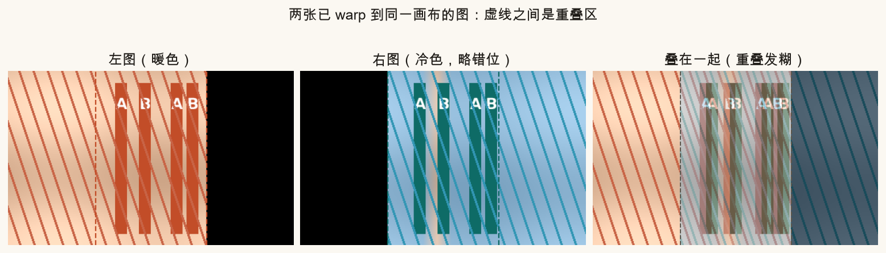
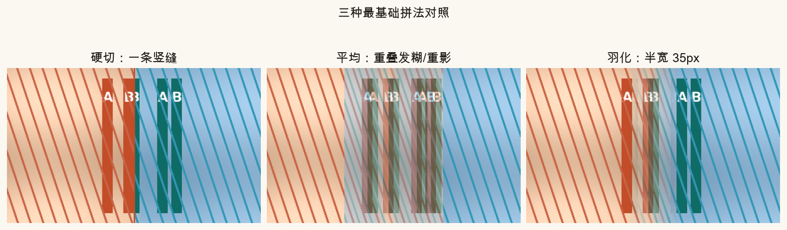
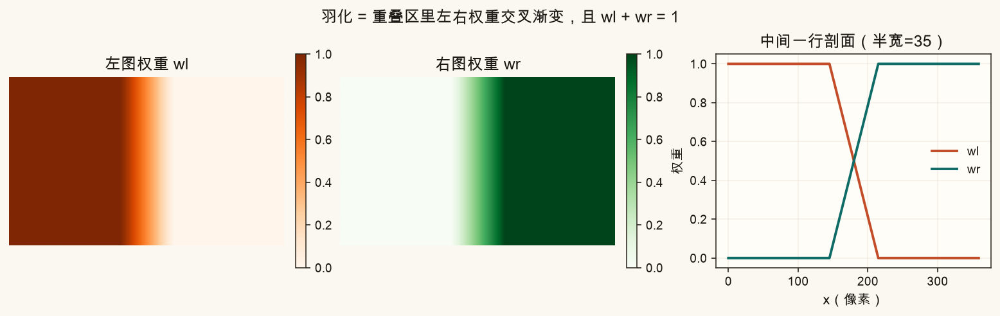
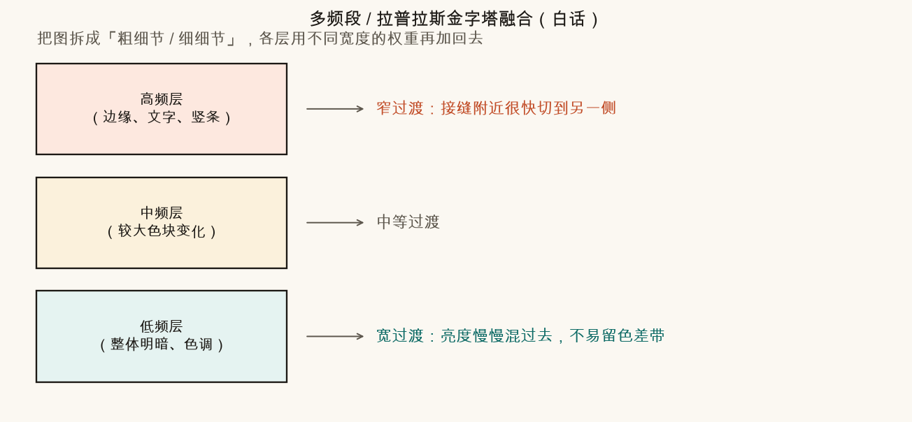
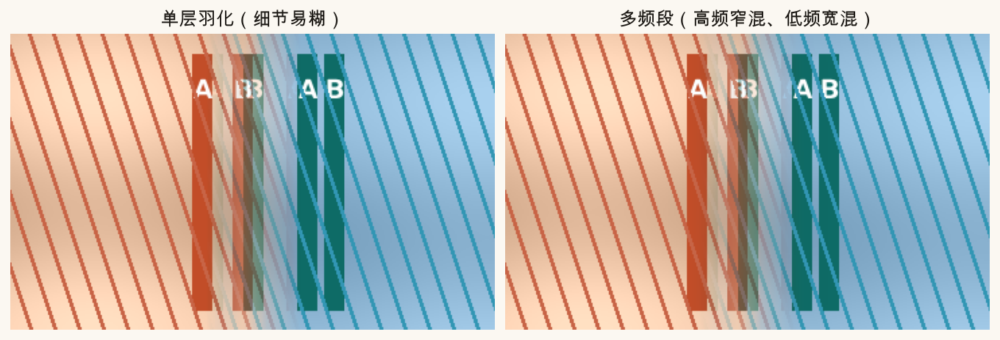
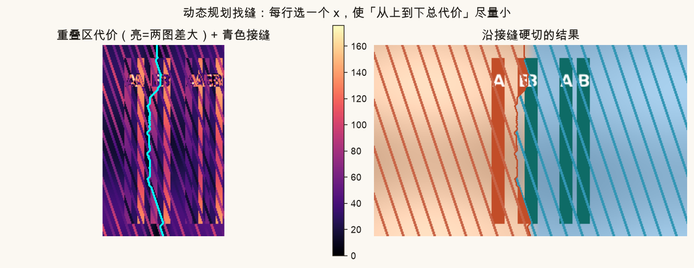
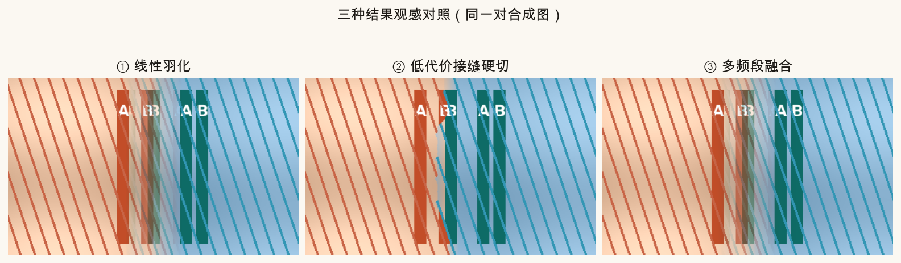

第 10 篇 · 叠图不露馅 · 约 55 分钟
前面几篇把两张图 warp 到同一画布后，重叠区怎么「粘」在一起？硬切会留一条刀口，简单平均会糊成重影。本篇从最笨的三种拼法讲起，再讲羽化、多频段（拉普拉斯金字塔）融合，以及用动态规划/图割去「找一条不太显眼的缝」。
全景拼接做到「两张图已经画到同一张大画布」时，中间会有一条重叠带：同一块真实世界，左右相机各拍了一份。理想情况两份像素一模一样，随便留哪边都行。现实里几乎总会有差：
本篇脚本造了一对合成图：左暖右冷，重叠区里竖杆故意错开几个像素，用来放大这些毛病，方便肉眼对比。

记住流水线位置：检测 → 匹配 → 估 H → warp 到画布 → 本篇：融合 →（可选）曝光补偿。融合解决的是「叠在一起怎么不露馅」，不是重新估几何。
先看三种「小学生也会想到」的拼法。它们几乎零成本，但观感差很多。
在重叠区选一条竖线（或任意曲线），左边像素全用左图，右边全用右图。每个像素只来自一张图，所以不会糊，也不会半透明重影。坏处：交界处若亮度或纹理对不齐，会留下一条清晰的缝——像两张纸对贴。
重叠区每个像素取左右平均值：
I = (IL + IR) / 2
白话：两张照片「半透明叠一起」。色差会被冲淡一点，但几何错位会变成双影/发糊——杆子变两根，文字变重影。两边权重永远 0.5，没有「逐渐交接」。
仍然混合，但权重随位置渐变：靠近左独有区时左图权重大，靠近右独有区时右图权重大。重叠带中间附近，权重交叉过渡。常见一维线性羽化：
I = w · IL + (1 − w) · IR， w 从 1 滑到 0
缝被「抹开」成一条色带，刀口不那么刺眼；但若杆子对不齐，过渡带里仍会短暂出现双影——只是比纯平均柔和一些。

羽化要定一个半宽（脚本里叫 FEATHER_HALF_WIDTH）：从「左图完全占优」过渡到「右图完全占优」大约跨 2×半宽 个像素。

实现时只在「两图都有像素」的地方做交叉权重；只属于左图或只属于右图的地方，权重直接给 1，不要掺黑色背景。
下面用浏览器即时模拟一维羽化（不跑 OpenCV）。暖色块与冷色块在中间重叠；拖动半宽，看过渡带变宽还是变窄。同时画一条「错位竖线」——半宽一大，双影带就会变宽。
单层羽化有个天生矛盾：你希望亮度慢慢混（过渡要宽），又希望细线、文字、杆子别糊（过渡要窄）。一个宽度两头难顾。
多频段融合的点子：先把图拆成好几层「不同粗细的细节」，再每层用不同宽度的权重混合，最后加回去。
工程上常用拉普拉斯金字塔：


OpenCV 的 detail::MultiBandBlender、许多全景库默认就走这一路。本篇脚本用「拉普拉斯金字塔 + 权重高斯金字塔」手写了一版示意，方便你看清步骤；工业实现还有边界处理、层数自适应等细节。
还有一类思路：尽量别混，先找一条「两图最像」的路径，再沿路径硬切。若路径刚好走在「左右几乎相同」的像素上，刀口就几乎看不见；若错位严重，缝会绕开「差得离谱」的竖杆交汇处。
重叠区每个像素算一个代价，常见最简单定义：
cost(x, y) = |GrayL(x, y) − GrayR(x, y)|
差越大 → 越不适合当接缝。还可以加上梯度差等，让缝更爱贴着边缘走（类似 seam carving 的能量）。
约束：从上到下，每行选一个 x；相邻行的 x 最多左右偏 1（缝不能横跳）。目标：整条路径代价之和最小。
算法直觉（和你玩过的「最短路」一样）：

把每个重叠像素看成图上的节点：连到「左标签 / 右标签」的边表示「归谁」的代价，像素之间的边表示「邻居标签不同」的惩罚。求最小割，等价于给每个像素贴左或右标签，使总代价最小。比「每行一个 x」的竖缝更自由（可以围出不规则区域），算得也更重。OpenCV 的 detail::GraphCutSeamFinder 就是这一路。本篇用 DP 竖缝建立直觉即可。
找缝解决「刀口放哪」；羽化/多频段解决「刀口怎么抹」。常组合：先找缝得到标签图，再在缝附近做很窄的多频段融合——既少重影，又淡色差。
同一对合成图，三种进阶策略并排：

| 方法 | 色差刀口 | 几何错位 | 计算量 | 一句话 |
|---|---|---|---|---|
| 硬切（固定中线） | 容易露 | 不糊，但缝明显 | 极低 | 调试几何时很好用 |
| 平均 | 冲淡一点 | 重影最明显 | 极低 | 几乎只作反面教材 |
| 羽化 | 较好 | 过渡带仍可糊 | 低 | 先调半宽建立直觉 |
| 找缝 + 硬切 | 依赖缝质量 | 通常更干净 | 中 | 差得大的地方绕开 |
| 多频段 | 很好 | 细节保留较好 | 中高 | 全景默认常客 |
source .venv/bin/activate # 若尚未激活
MPLCONFIGDIR=/tmp/mpl-cache python code/ch10_blend.py会写出 ch10_overlap_setup.png、ch10_hard_vs_avg_vs_feather.png、ch10_feather_weights.png、ch10_pyramid_idea.png、ch10_seam_cost.png、ch10_three_results.png、ch10_multiband_result.png，以及你的 ch10_my_feather.png。
打开 code/ch10_blend.py，顶部有两处旋钮，只影响 ch10_my_feather.png（以及你重新生成时的观感）：
FEATHER_HALF_WIDTH 改成 5：过渡极窄，接近硬切，色差刀口会更明显。80：过渡很宽，重叠带更像「大范围平均」，错位竖杆的双影带变宽。MISALIGN_PX 从 8 改到 0：几何对齐时，平均/羽化也会好看很多——体会「融合救不了糟糕对齐，但对齐好了融合更轻松」。MISALIGN_PX 拉到 16，对比 ch10_seam_cost.png：代价图上高亮竖带更宽，接缝会更用力去蹭低差走廊。平均在重叠区始终 50/50 混合。只要左右有几何偏差，同一物体会叠出双影；硬切每个像素只取一侧，不会半透明重影，但可能留下刀口。
这样混合不会整体变暗或变亮（忽略曝光差时）。若两边权重之和常小于 1，重叠区会发灰发暗。
把图像拆成不同频率层，低频用宽过渡、高频用窄过渡，再重建。从而同时照顾色差与细节。
让接缝空间上连续，不能这一行在最左、下一行突然跳到最右（那会留下锯齿或断裂感）。也把搜索变成经典的逐行最短路。
优先改善对齐（或接受视差限制）；融合只能掩盖，不能凭空造出正确几何。找缝可绕开最差区域，多频段可减轻糊感，但大错位仍会露馅。
融合仍可能败给曝光跳变和运动鬼影。下一篇看曝光补偿基本做法、失败图库，以及拍摄时就能避开的坑。